Classic tutorial
A four-player Classic game: you and three bots. In ten minutes you will see everything that happens in a turn.
1. Create the table
Open the game (ted.cmd on Windows,
./ted on Linux) and go to the host panel. Under
Create a game, choose Classic and
4 players, and press Create game.
In the Invite your friends box, choose 3 under Bots and leave the duration at No limit. Then press I will play too.
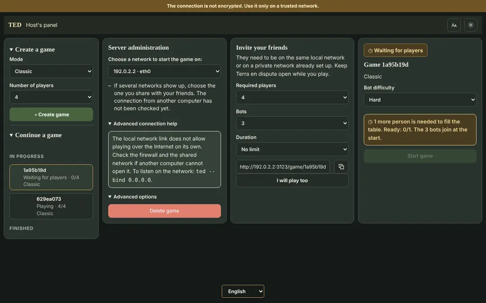
2. Join the table
Type your nickname, choose a color and press Join. In the waiting room, press I'm ready.
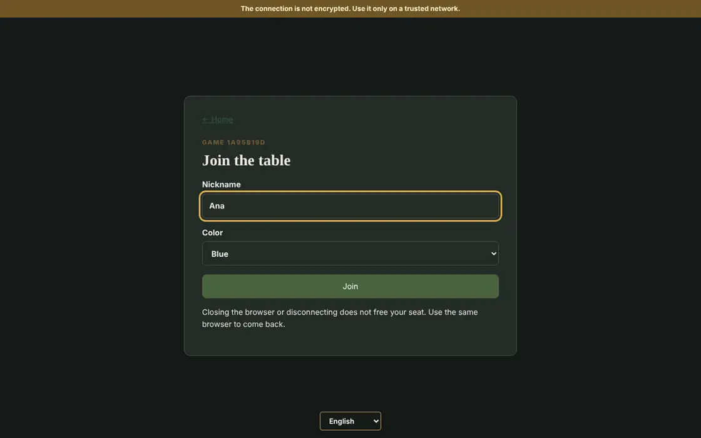
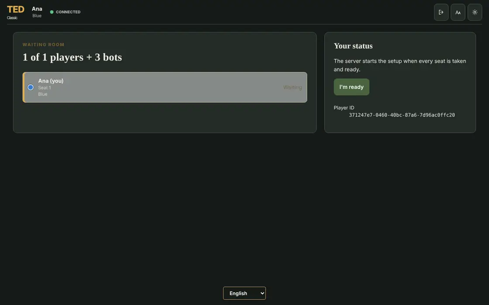
Go back to the host panel and press Start game. With friends it works the same way: each one opens the invitation link, joins and marks themselves ready.
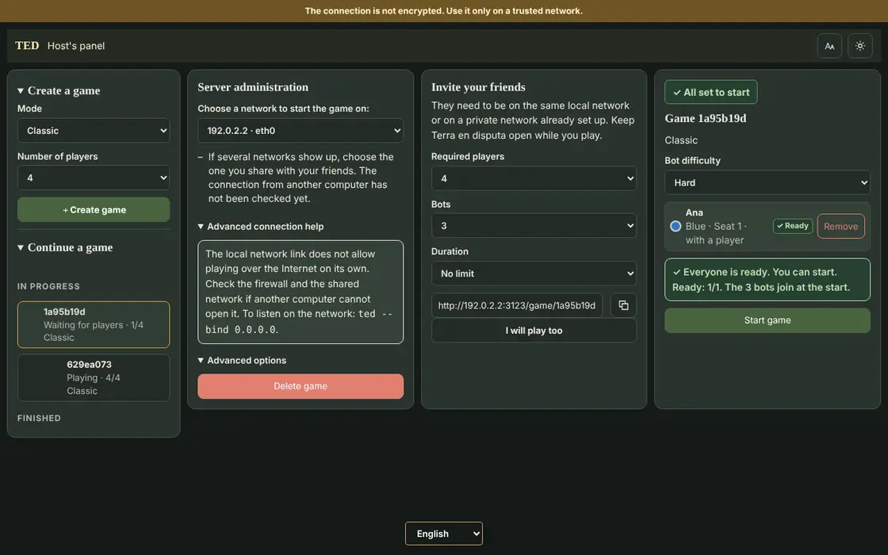
3. Place your first armies
The countries are already dealt, with one army in each. The Deployment menu opens at the bottom left: choose a country under Destination, add armies with + and repeat until the reserve reaches zero. Then confirm with the button on the right or with Enter.
First you place 5 armies and, in a second pass, 3 more. A tip: keep your armies together in a few countries, close to a continent you want.
4. Check your objective
Press the first button of the bottom bar or the O key. Your objective is secret: besides meeting it, you also win by holding 30 countries.
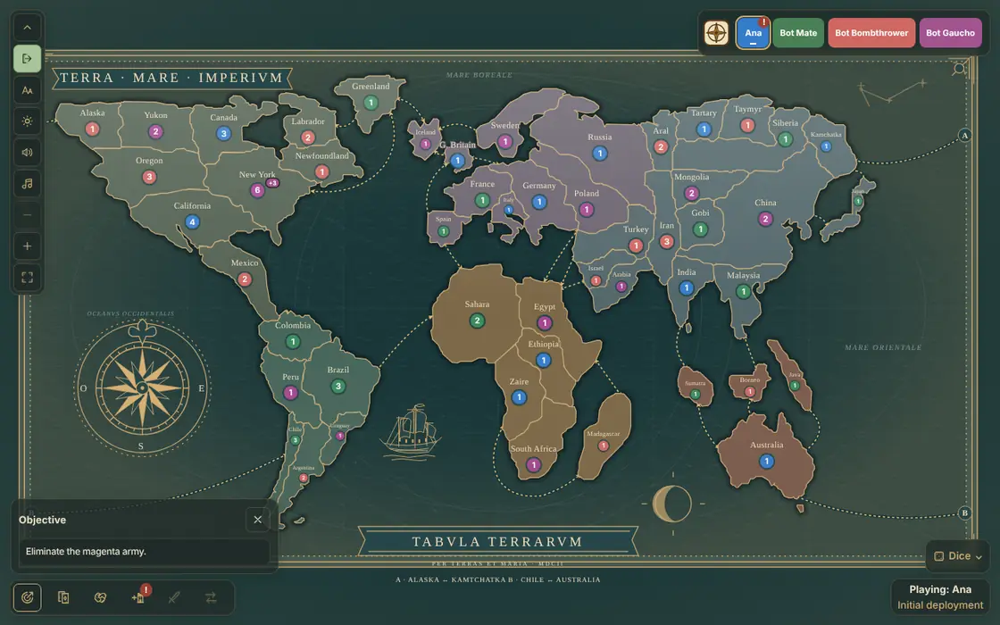
5. Attack
Once everyone has placed, the first attack round begins. Open the Attack menu, choose a country of yours with 2 or more armies under Origin and an enemy neighbor under Destination. Then press the sword button or Enter.
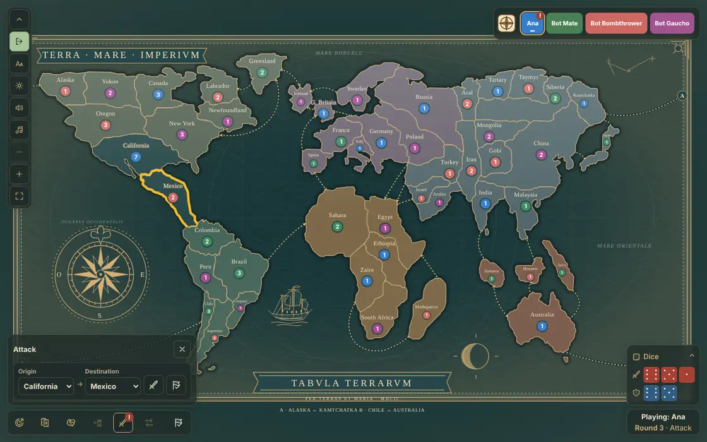
The dice show up at the bottom right: red for the attack and blue for the defense. They are compared highest to highest, and ties go to the defender. If the enemy country runs out of armies, you conquer it and choose how many armies move in, from 1 to 3.
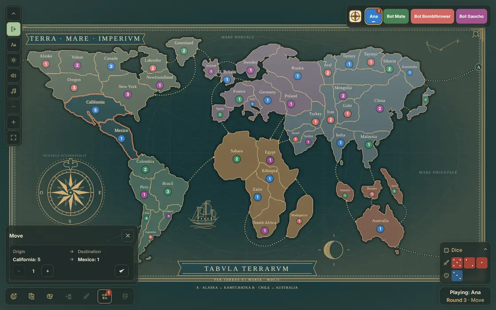
You can keep attacking as much as you like. When you are done, press the flag button, End attacks.
6. Regroup
In the Move / Regroup menu you can move armies between neighboring countries of yours to strengthen your borders. Confirm each move and, at the end, press End regroup.
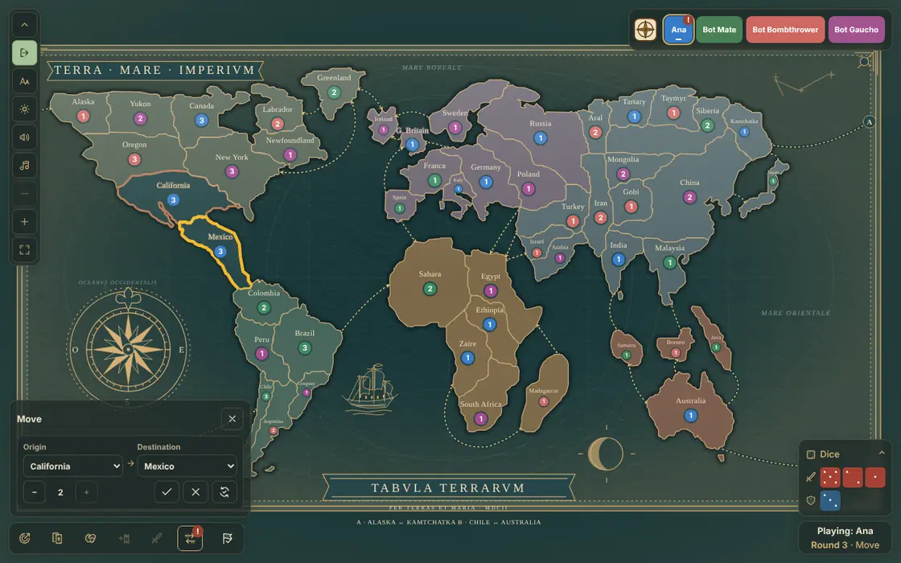
7. Draw your card and end the turn
If you conquered at least one country, press Draw card in the Cards panel (key C). Three cards with the same symbol, or with all three different symbols, can later be exchanged for armies. To finish, press the flag button of the bar, End turn.
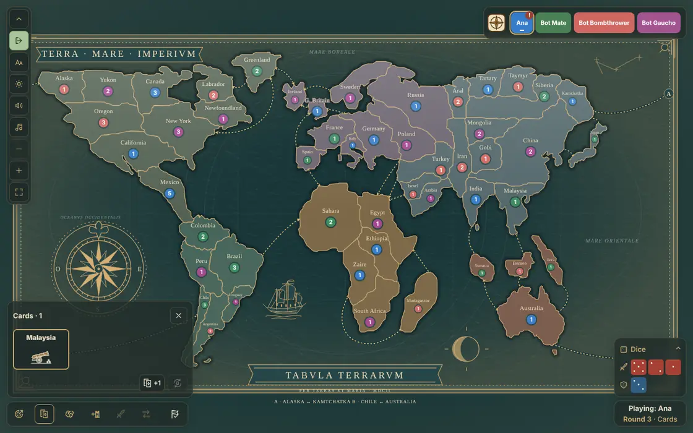
While the others play, the map marks each attack: the attacking country with a red outline and the defender with a blue one.
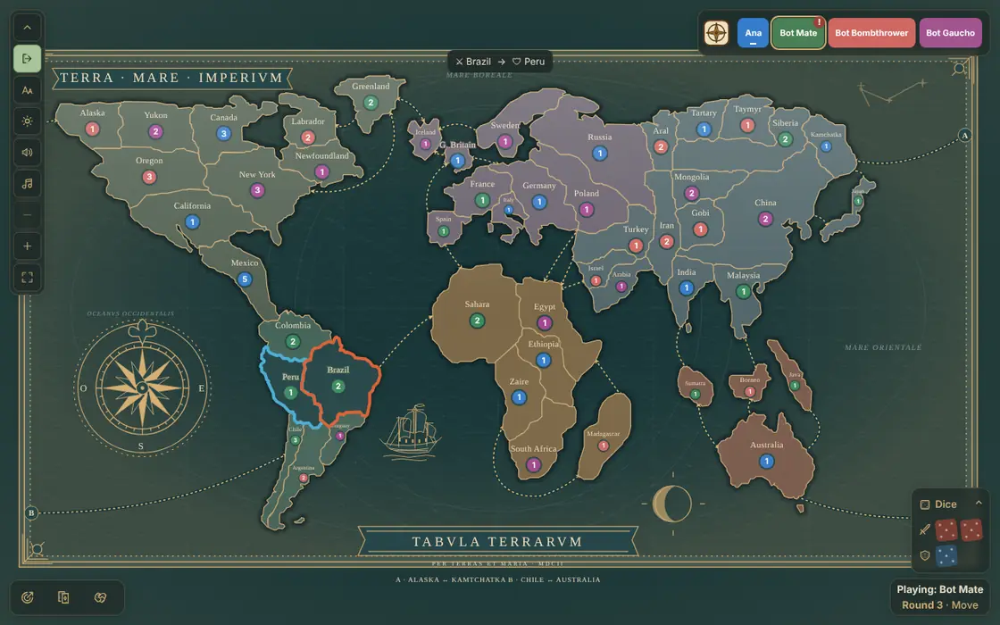
8. The reinforcement round
From now on, each round starts with reinforcement. You get armies for half your countries, plus the extras of the continents you hold. If you have three cards you can exchange, the exchange adds more armies. Place them just like at the start.
Then the attack round comes again, and so on until someone wins.
9. Pacts
On your attack turn, the Pacts panel (key P) lets you offer deals, such as not attacking each other across a border. The preview shows what you are offering before you send it.
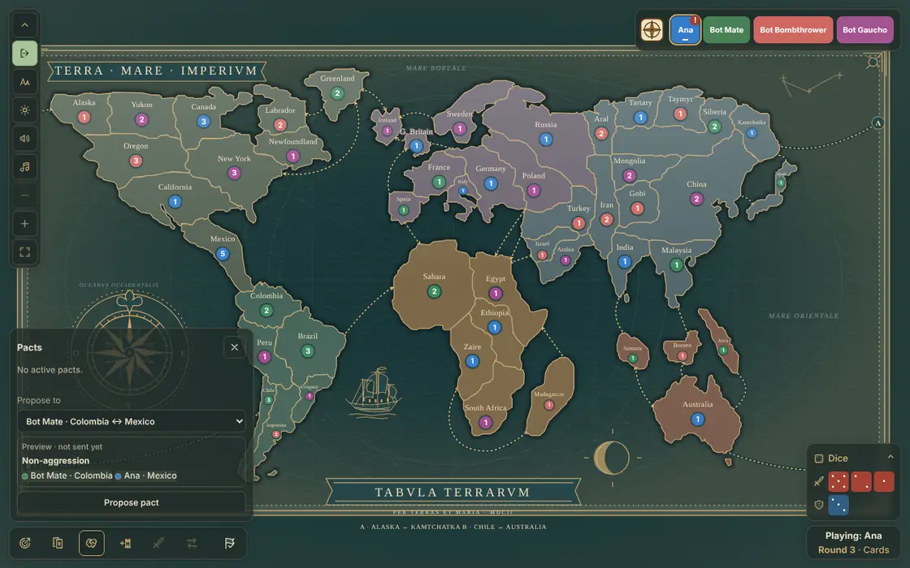
What next?
- The full rules are in Classic.
- To play with friends, see Create and join.
- When you want more, try Competitive or Retake.